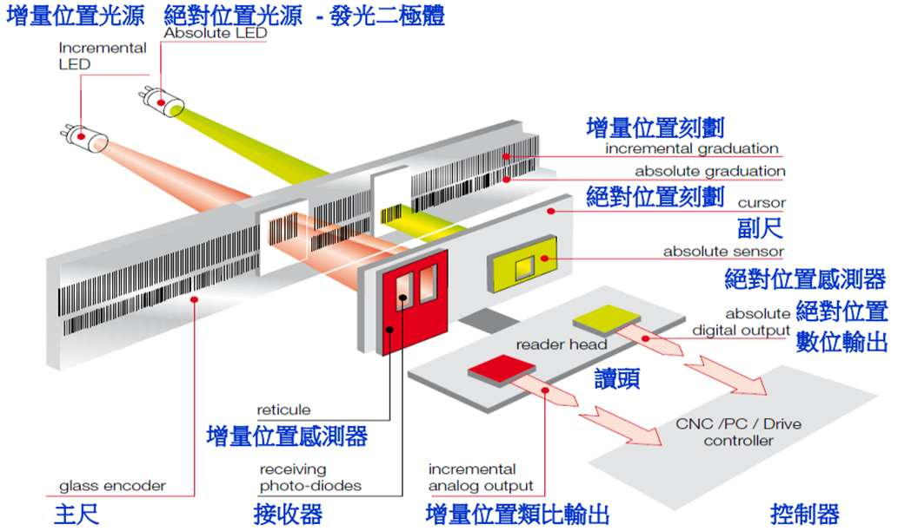
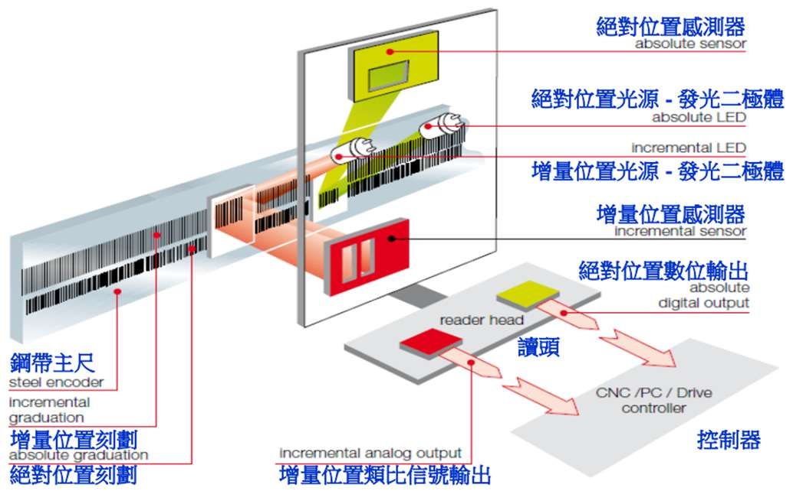

1. 位移感測器總覽：直接量測 vs 間接量測與三大編碼器對照
🎯 核心觀念一：直接量測 (Direct) vs 間接量測 (Indirect) 與背隙誤差 (Backlash)
間接量測：量測伺服馬達之旋轉編碼器角度，再經由滾珠導螺桿螺距換算成線性位移。缺點是在反向運動時，螺桿與螺帽的微小間隙會產生背隙誤差 (Backlash error)，導致工作台滯後。
直接量測：將尺規（如光學尺）直接固定於移動軸工作台上，直接讀取實際位移，完全沒有背隙問題，精度最高！
📊 核心觀念二：三大線性編碼器特性全方位對比矩陣
| 編碼器類型 | 工作原理 | 優點與強項 | 缺點與限制 | 抗油污粉塵能力 | 節距 (Pitch) 與解析度 | 典型工業應用 |
|---|---|---|---|---|---|---|
| 光學尺 (Optical Scale) | LED 平行光通過穿透/反射光柵，光電二極體接收明暗週期訊號 | 精度極高（可達次微米甚至奈米級）、響應速度快 | 光學鏡面易受油污、水氣、粉塵遮蔽污染 | 節距小（如 4~20 μm），經細分割後解析度可達數 nm | 半導體製程、CNC 高階工具機、三次元座標量測儀 (CMM) | |
| 電感式感應尺 (Inductive Scale) | 主尺與副尺蜿蜒傳導線圈之高頻交流電磁感應耦合 | 結構堅固耐用、不受油污灰塵金屬屑影響、間隙容忍度大 | 線圈繞組幾何尺寸限制，節距通常較大，高頻電磁屏蔽要求高 | 節距較大（通常 1~2 mm），需配合電子插補以提升解析度 | 重型加工機、自動化產線、油污嚴重的重工業衝壓與鍛造機 | |
| 磁性尺 (Magnetic Scale) | 永久交錯 N-S 磁極主尺與 U 型磁軛讀取頭磁通調制 | 不怕油水冷卻液、長行程安裝容易（可軟磁帶黏貼）、耐衝擊震動 | 解析度較光學尺低、強外部磁場環境下恐受干擾消磁 | 節距中等（如 0.5~5 mm），解析度通常在 1~5 μm | 木工機、石材切割機、傳統大型龍門銑床、沖床行程監控 |
🔬 光學尺構造分類：穿透式玻璃尺 vs 反射式鋼尺 (教材 Page 24)
穿透式玻璃光學尺 (Transmission Glass Scale)

- 光學路徑：光源 (LED) → 聚光鏡 → 玻璃主尺 → 副尺光柵 → 受光元件。光線穿透玻璃主尺。
- 基材材質：低熱膨脹光學玻璃，刻劃精度極高、穩定度極佳。
- 行程限制：玻璃長度受限，通常適用於 1~3 米以內之高精度量測。
反射式鋼帶光學尺 (Reflective Steel Scale)

- 光學路徑：光源與感測器設於同側，光線射向具有高反射率的金屬鋼帶刻線並反射回讀取頭。
- 基材材質：彈性不銹鋼帶，可整捲收納、安裝具備張力拉伸調節機構。
- 行程特點：可拼接至數十米甚至百米以上，非常適合大型龍門機台與長行程自動化滑軌。
2. 電感式感應尺 (Inductive Scale) 工作原理與雙迴路
電感尺的主尺與副尺（讀取頭）均佈有線性蜿蜒伸展 (Serpentine pattern) 的傳導線圈。 當讀取頭通入高頻激磁電流時，兩者之間的電磁感應耦合 (Electromagnetic Coupling) 強弱會隨著相對位移呈現週期性變化。
蜿蜒線圈幾何重疊視覺化 (直尺與讀取頭)
電磁結合度與正餘弦感應訊號 (SIN / COS)
位置 A (0 間距)：尺的迴路與讀取頭迴路完全重合一致，磁通耦合最大，電磁結合度在正方向達到最大值 (+1.0)。
💡 教材重點解析 (Page 22)：為何讀取頭需要兩組偏離 1/4 間距的迴路？
在讀取頭上設計兩組偏離 1/4 間距 (90° 相位差) 的獨立迴路，分別感應出正弦（SIN）與餘弦（COS）的電磁結合訊號。 藉由這兩組正交訊號，系統可以利用正切運算求解精確相位，完全消除因尺面與讀取頭上下間隙 (Air Gap) 波動對信號振幅產生的干擾，大幅提升工業惡劣環境下的檢測穩定度！
3. 磁性尺 (Magnetic Scale) 預磁化與 2 倍頻感應原理
磁性尺包含兩大部件： 主尺 (M) 為預先充磁、具有等間距 N-S 極交錯的永久磁性尺； 讀取頭 (F) 為 U 型軟磁鐵心磁軛，上方繞有兩組通入交流電的激勵線圈 (Is) 與一組接收感應線圈 (S1, S2)。
U 型磁軛與 N-S 磁極主尺相對幾何
激勵電流 (f) vs 接收線圈感應訊號 (2f)
1. 正對極性：當 U 型軛兩臂正對 N、S 兩極時，主尺磁通深度預磁化鐵心，接收線圈感應出的訊號頻率會是激勵電流的兩倍 (2倍頻, 2f)，振幅最大。
2. 對稱中心：當 U 型軛處於 N、S 磁極的幾何對稱點時，兩臂磁通等量相抵，淨磁通為零，接收線圈沒有輸出訊號。
3. 分析感應電壓的包絡變化，即可解算出讀取頭相對於磁尺的精密位移。
4. 光學尺量測原理：四組感測器與差動消除直流飄移 (DC Drift)
在穿透式光學尺中，LED 光線穿透主光柵與移動副光柵，在光電感測器上產生明暗週期變化。 理想情況下使用兩組感測器輸出 sinθ 與 cosθ。但為何工業光學尺均採用四組光感測器？
數學模型推導 (教材式 2.1 ~ 2.6)
四組光感測器物理上依序平移 1/4 間距（相位各差 90°）。當光源因發熱或老化產生不穩定直流飄移 V' 時：
進行差動電路處理（減法運算）：
🎉 雙重優點：1. 直流飄移 V' 被數學完全對消！ 2. 輸出信號振幅放大一倍 (2×)，大幅提升訊噪比 (SNR) 與靈敏度！
未經差動之 4 組原始感測電壓 (V₁, V₂, V₃, V₄)
經差動電路處理後之正交訊號 (Va = 2sinθ, Vb = 2cosθ)
5. 莫爾條紋 (Moiré Effect) 幾何光學放大與安裝容差
❌ 為什麼不能平行安裝？（感測器安裝誤差的致命影響）
若主光柵與副光柵完全平行安裝，假設光柵柵距 w = 20 μm：
若光電感測器的定位精度僅有 ±1 μm，則副尺每移動一個柵距，感測位移就會產生 ±5% 的嚴重誤差！
當平台累計移動 20 mm 時，累積誤差會暴增至 ±1 mm，系統根本無法使用！
✅ 巧妙解決方案：莫爾條紋 (Moiré Effect) 斜交安裝
將主尺與副尺以微小夾角 θ 斜交安裝！此時光柵交疊會產生週期遠大於柵距的宏觀莫爾條紋。
條紋週期公式：l = w / [2·sin(θ/2)] ≈ w / θ
當 w = 20 μm、θ = 1° 時，條紋寬度放大為 l = 1.146 mm（放大達 57.3 倍！）。感測器對準放大後的條紋進行感測，定位誤差 ±1 μm 換算後累積誤差驟降至 0.087%（小於 0.1%）！
光柵疊合與莫爾條紋動態 Canvas 模擬（可見宏觀縱向移動）
6. 4倍頻解碼 (Quadrature Decoding)、方向狀態機與參考刻劃線
1. 4倍頻原理解析 (Page 28)
將差動弦波 Va, Vb 通過比較器轉換為正交數位方波 A 與 B。
在一個週期內，A 與 B 產生 4 個不同的數位狀態：(1,1), (1,0), (0,0), (0,1)。
若主尺線距為 20 μm，則方波每 5 μm 即可計數一次，解析度直接提高 4 倍！
2. 移動方向邏輯判別 (Page 33)
單純計數無法判別左右方向，方向是依據方波編碼的狀態轉移順序來判定的：
正向移動：(11) → (10) → (00) → (01)
反向移動：(11) → (01) → (00) → (10)
3. 參考刻劃線 (Reference Mark) (Page 29)
刻劃線若有微小製造誤差，增量計數會累積該誤差。因此在固定距離處設有參考刻劃線 (Index Mark)。
每次讀取頭滑過參考訊號時，立即強制將位移重設修正為基準值，並利用寬平行光束之平均化效果 (Averaging effect) 消除刻劃瑕疵。
方波 A、B 時序與當前邊緣位置 (4倍頻)
方向判定狀態機環形流向 (State Machine)
7. 利薩爾圓 (Lissajous Circle) 示波器調校儀
在工業現場安裝光學尺時，如何確定感測器位置與相位是否精確到位？
工程師會將差動後的弦波 Va 與 Vb 輸入示波器的 X-Y 模式 (極座標圖)：
• 正圓形：表示兩路訊號相位差剛好為 90° 正交、且振幅平衡，感測器安裝完全正確。
• 橢圓形 / 傾斜：表示兩路訊號存在相位誤差或振幅不平衡，必須透過微調機構旋轉感測器角度，直到圖形成為正圓！
虛擬示波器 X-Y 模式 (利薩爾圖形)
示波器時域雙通道波形 (Ch1: Va, Ch2: Vb)
8. 學生實戰測驗：觀念與計算能力自我檢測
請檢驗您對教材第 19 ~ 33 頁核心概念的掌握度。共 6 道題目，涵蓋背隙成因、差動電路、莫爾條紋放大、4倍頻解析度、方向判別與利薩爾圓調校。